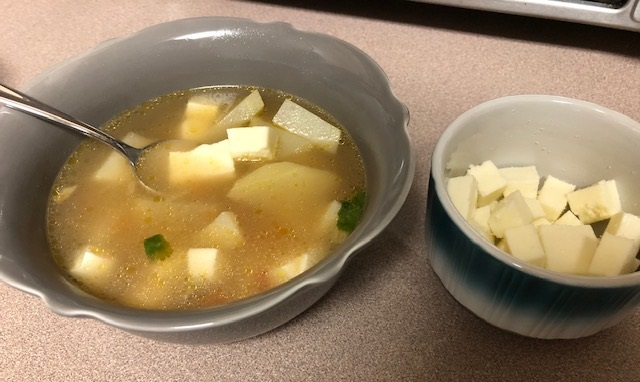

Recipe | Caldo de Queso
This recipe is courtesy of my mother in law. Caldo de queso a hearty soup made with potatoes and queso fresco. Queso fresco is a fresh cheese (imagine that) with a mild mozzarella-like flavor with a crumbly texture. This recipe makes a large pot.
Ingredients
- 4 russet potatoes
- 1 Roma tomato
- 1/4 onion (white or yellow)
- 1/2 Tbsp minced garlic
- 1/3 cup white rice
- 32 oz vegetable broth or 2 Tbsp vegetarian chicken powder
- Queso Fresco
- Salt and pepper
- Cilantro
You can substitute the vegetarian broth with chicken broth, stock, or bouillon; beef probably won't work. A 1.5 pound wheel of queso fresco should be plenty for the whole pot.
Steps
- Fill pot about 2/3 full with broth or bouillon and water, and bring to boil
- Peel and cut potatoes into cuadritos and boil in broth
- Finely dice tomato and onion
- Sauté tomato, onion, and garlic with salt and pepper
- Put sautéed veggies and rice into boiling broth
- After boiling a while, lower heat and add cilantro to broth
- Cut queso fresco into cubes
- When ready to serve, pour soup into bowl and add queso fresco and salt and pepper to taste
Conclusion
That's enough soup to last you a couple days. The longer the potatoes steep in the broth, the softer they become, a desirable characteristic. The soup is pretty mild, so can consider adding a bit of cayenne powder to taste, or add a jalapeño to the list of sautéed vegetables for the broth.
